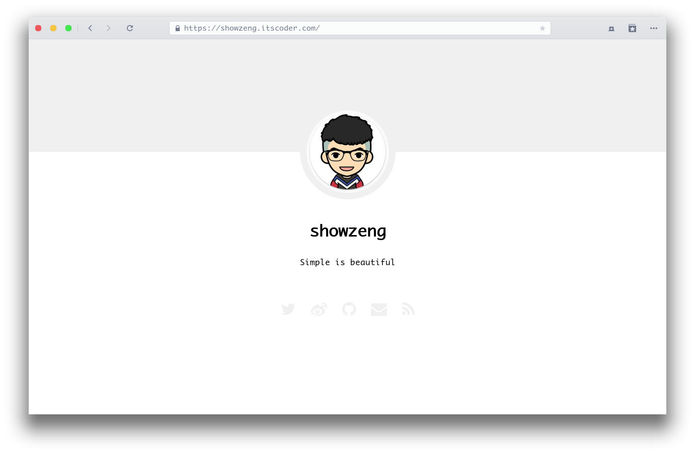

Minimalism



Minimalism 是一款基于 Jekyll 为极简主义者打造的极简主题。你可以访问 我的博客 或者 主题 demo 来预览一下。
特性
V0.1.x
- 这款主题采用响应式布局，对各大主流浏览器做了兼容，对移动客户端做了适配
- 支持 RSS 订阅
- SEO 优化
- 文章默认采用 CC BY-NC-ND 4.0 协议对著作权进行保护，支持 emoji 表情
- 支持禁止复制、禁止右键菜单、复制附带版权声明等多种功能
- 支持文章图片查看大图
- 支持文章打赏 (微信、支付宝)
- 支持评论功能 (目前支持来必力、gitment)
- 支持站点统计 (目前支持谷歌统计、百度统计、友盟 cnzz 统计)
- 最后且最重要的当然还是对博客文章极度的阅读体验优化
安装
在你的 Gemfile 文件中加入下面这一行:
gem "jekyll-theme-minimalism"
然后使用 bundle 执行安装:
$ bundle install
或者你也可以手动下载安装:
$ gem install jekyll-theme-minimalism
在你的配置文件 _config.yml 中修改启用主题 (本地预览):
theme: jekyll-theme-minimalism
使用 GitHub pages 发布时，在你的配置文件 _config.yml 中修改启用远程主题:
# theme: jekyll-theme-minimalism
remote_theme: showzeng/Minimalism
使用
支持
如果你觉得这个主题还不错，欢迎 star 或使用。你也可以自由的 fork，基于本主题打造你自己的主题，当然，希望最好是能署名或提及本博客主题。
此外你有什么好的建议、需求或者是碰到什么问题，欢迎提交 issue，本主题还会不断完善。
致谢
博客主题文章的文字颜色及部分排版受凯哥 HenCoder 网站的启发，打赏样式受 写代码的猴子的博客 的启发，特此感谢。
文章图片查看大图由 zooming 提供支持，特此感谢。
Todo
- [ ] Multilingual support (多语言支持)
- [ ] Toc (文章索引目录)
- [ ] Math support with LaTeX (数学公式支持)
Change log
查看 版本更新日志
打赏
如果主题对你有帮助，并帮你节省了一些折腾的时间，可以考虑打赏，这是对我所做工作的最大肯定。
License
The theme is available as open source under the terms of the MIT License.